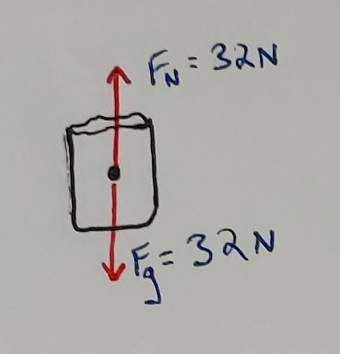
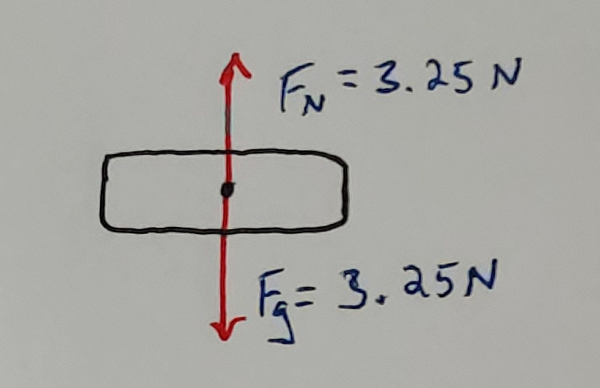
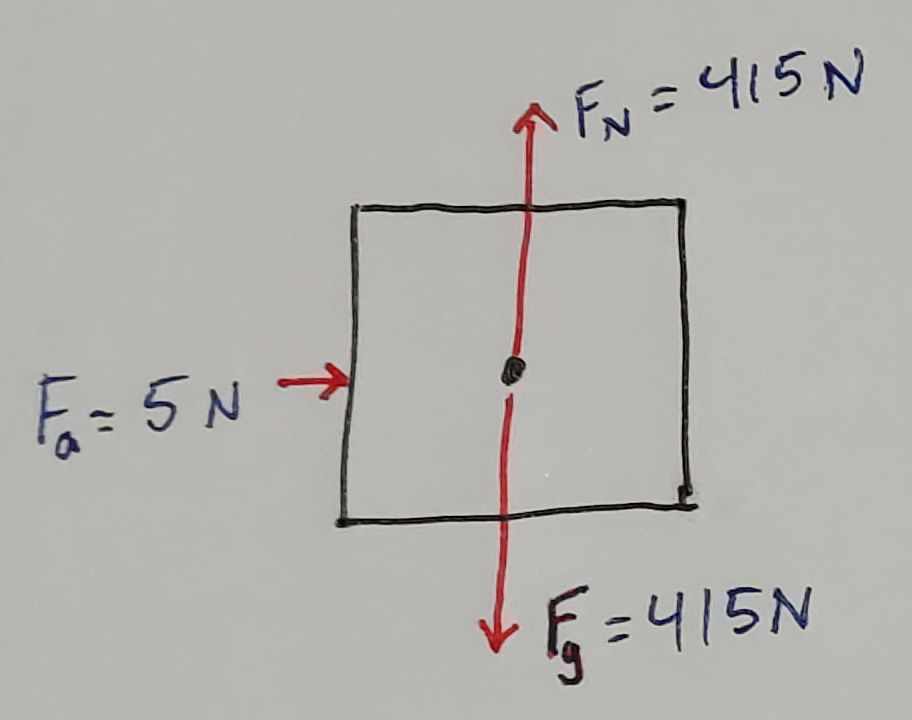
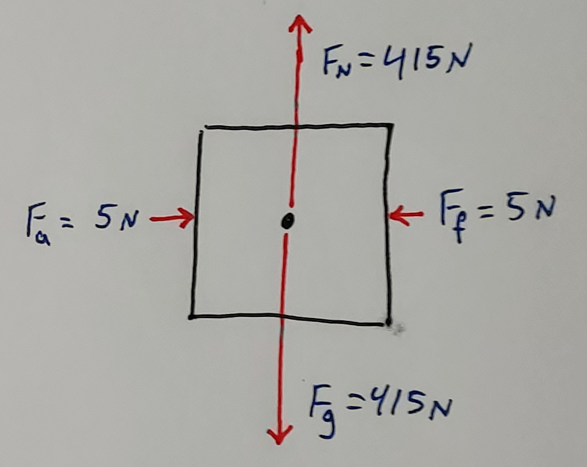
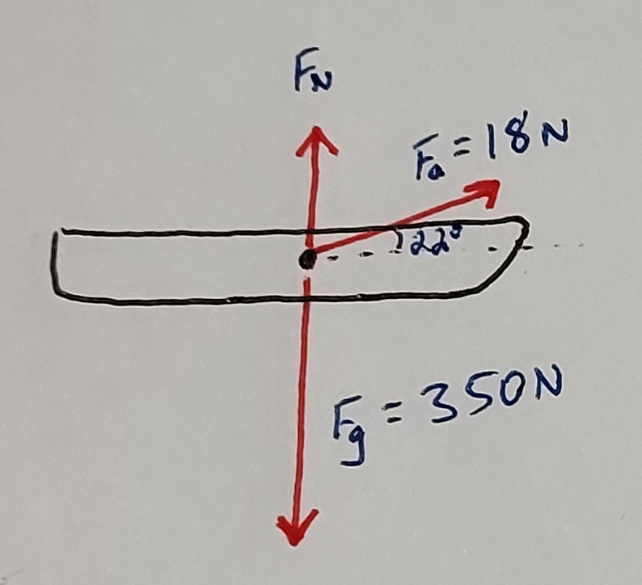
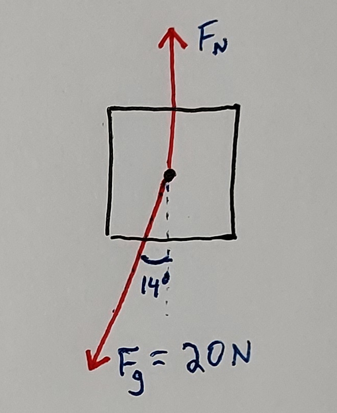

1. Simple Motion
1. Simple Motion 2. Accelerated Motion
2. Accelerated Motion 3. Projectile Motion
3. Projectile Motion 4. Newton's Laws
4. Newton's Laws 5. Momentum
5. Momentum 6. Energy
6. Energy 7. Heat
7. Heat 8. Electrostatics
8. Electrostatics 9. Circuits
9. Circuits 10. Magnetism
10. Magnetism 11. Waves
11. Waves4. Newton's Laws
Overview
Newton's Laws are fundamental concepts in classical physics. They help us predict the motion and behavior of everyday objects.Slides
Skills and Understanding
- Apply Newton's Laws to analyze physical behaviors and interactions of objects.
- Draw Free Body Diagrams (FBDs) and analyze forces in 2D.
- Apply Newton's 2nd Law, \(F=ma\), to solve for force, mass, and acceleration.
- Identify when an object is in equilibrium, and solve equilibrium equations.
Equations
\[ \begin{array}{cc} F = ma \quad \quad \quad \quad F_{f} = \mu F_{N} \\ \end{array} \]Vocabulary
- Acceleration is the rate at which velocity changes.
- Equilibrium describes when the forces on an object add to zero, resulting in no acceleration.
- Force is an influence on mass that can change its velocity. \(F=ma\).
- Friction is a force that opposes sliding motion due to the interaction of two surfaces. It acts parallel to the surfaces in contact.
- Inertia is the tendency of an object to continue in its state of motion. An object at rest stays at rest unless acted upon by a force. An object in motion maintains that motion unless acted upon by a force.
- Mass is a measure of the amount of matter in an object, measured in kilograms (kg).
- Weight is a measure of the force exerted on an object due to gravity.
4.1 Newton's Laws
-
Newton's First Law (Inertia)
An object at rest will stay at rest, and an object in motion will stay in motion, unless acted upon by a force. -
Newton's Second Law
The acceleration of an object is directly proportional to the force applied to it, and inversely proportional to its mass. \[F=ma\] -
Newton's Third Law
For every action, there is an equal and opposite reaction. This means that if an object A exerts a force on object B, then object B exerts an equal force in the opposition direction on object A.
4.2 Forces
There are several types of forces we will consider, including:
- \(F_{g}\) Force of Gravity - The weight of a mass.
- \(F_{a}\) Applied Force - A force that is applied to a mass, for example from pushing or pulling on it.
- \(F_{f}\) Frictional Force - A force that results from the friction between two surfaces.
- \(F_{N}\) Normal Force - The force that results from solid objects interacting. \(F_{n}\) is always perpendicular to the surface.
- \(F_{T}\) Tension Force - A force applied from a non-rigitd object like a rope, string, or cable.
4.3 Free Body Diagrams
Here are examples with Free Body Diagrams.
- A 3.2 kg bag of toys is sitting on the ground.
 - A 0.325 kg book is sitting on a shelf.
 - A 41.5 kg crate is sitting on the ground and someone is pushing with 5 N of force to the right.
 - A 41.5 kg crate is sitting on the ground and someone is pushing with 5 N of force to the right but the crate is being held in place by friction.
 - A sled with mass 35 kg is being pulled by a rope. The rope has a tension of 18 N and is pulled at an angle \(22^{\circ}\) above the horizontal.
 - A 2 kg block is on a frictionless ramp of incline \(14^{\circ}\).

4.4 Analyzing Forces
4.5 Gravity
\[ F_{g} = G \frac{m_{1}m_{2}}{d^{2}} \]